Después de 15 años, La Aplanadora del Rock vuelve con un
nuevo
disco de estudio y una experiencia única para sus fans. El 12 de noviembre en el Movistar
Arena,
Divididos ofrecerá un evento especial que incluirá la escucha exclusiva del álbum, la
proyección
de
un documental y una charla con la banda.
Una oportunidad imperdible para vivir de cerca el regreso discográfico de una de las bandas
más
potentes del rock argentino.
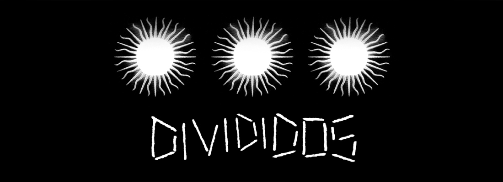
Albums destacados de todos los tiempos
La era de la boludez
1993
Divididos
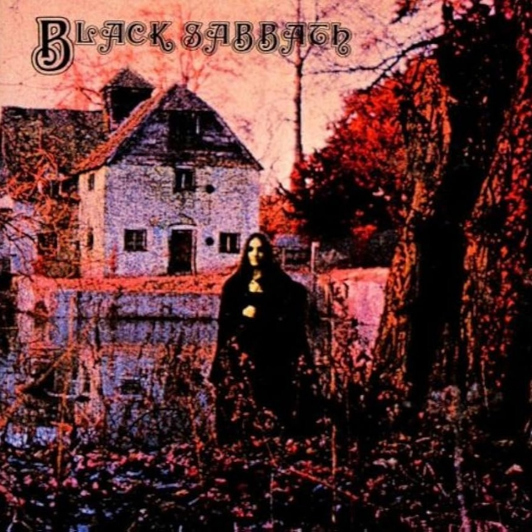
Black Sabbath
1970
Black Sabbath
Led Zeppelin IV
1971
Led Zeppelin
In Rock
1970
Deep Purple
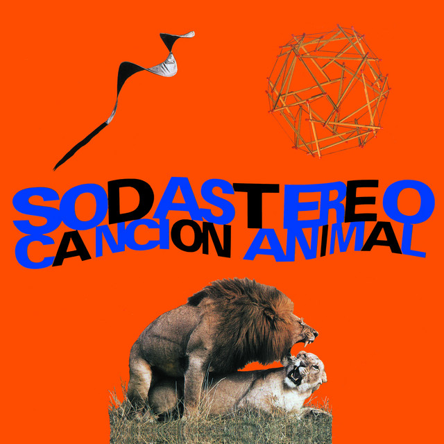
Canción Animal
1990
Soda Stereo
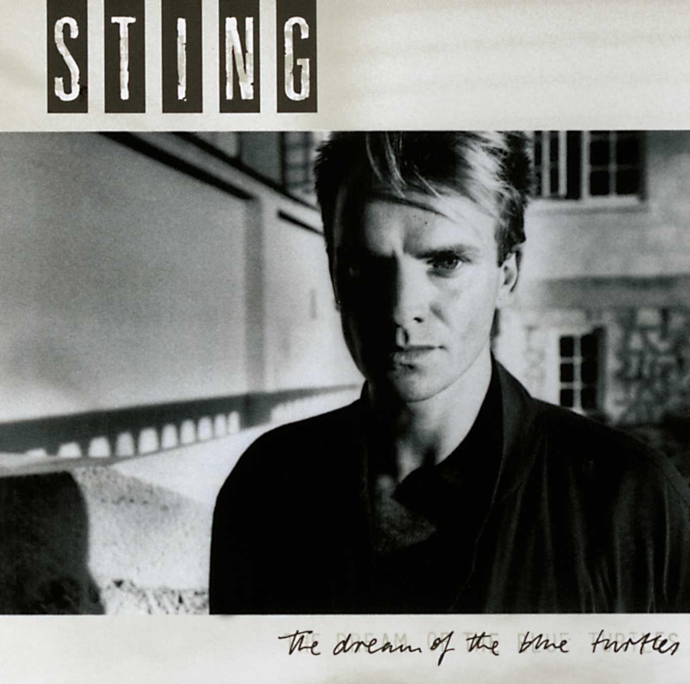
The Dream of the Blue Turtles
1985
Sting
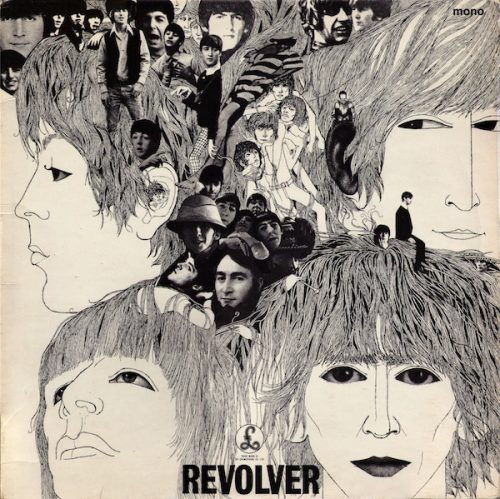
Revolver
1966
The Beatles
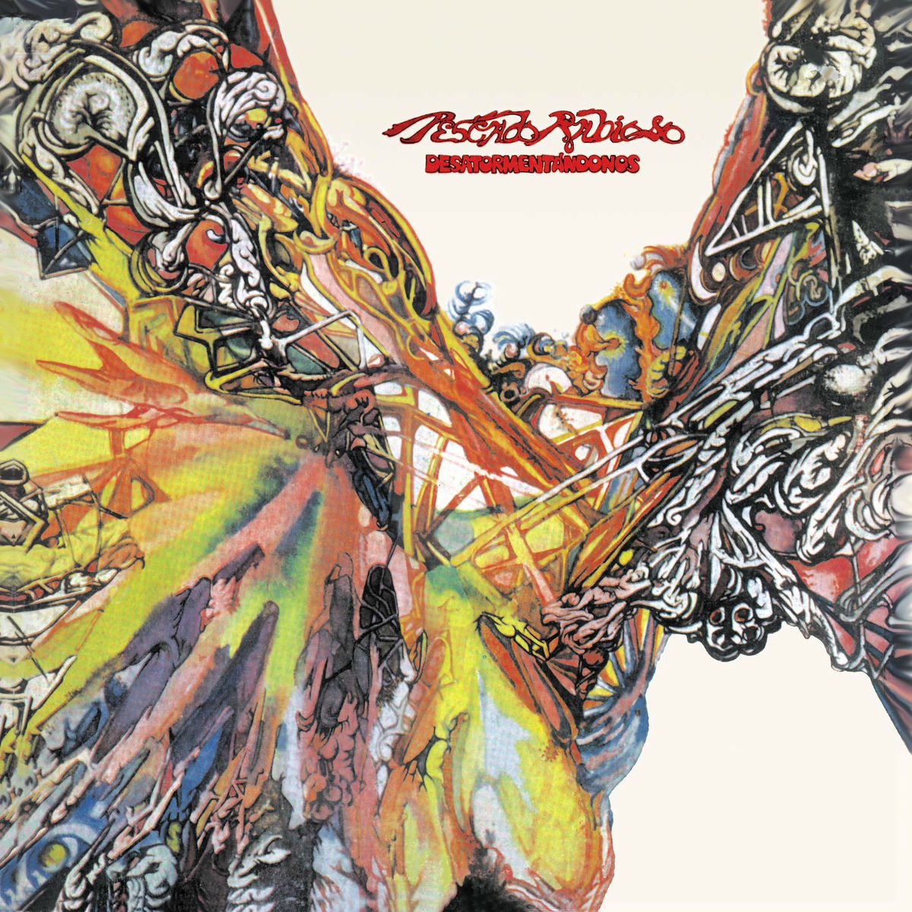
Desatormentándonos
1972
Pescado Rabioso
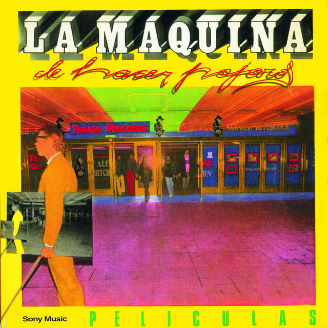
Películas
1977
La Máquina de Hacer Pájaros
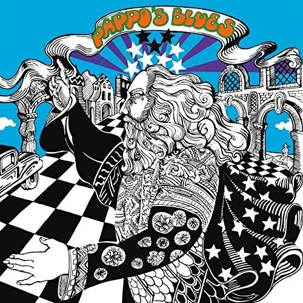
Pappo's Blues Volumen 3
1973
Pappo's Blues
Top artistas historicos
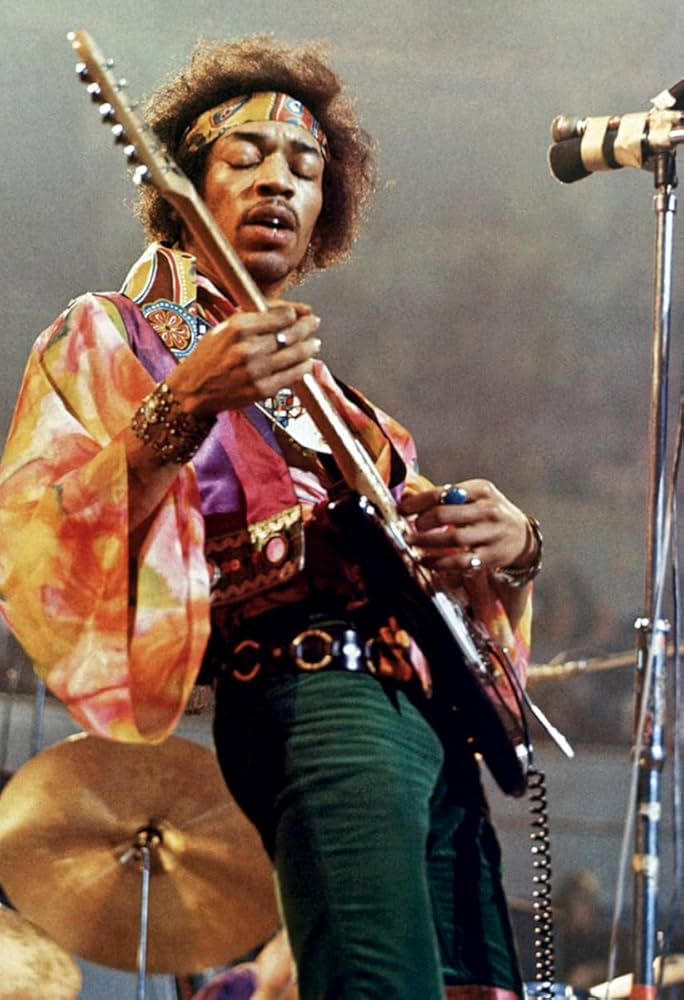
Jimmy Hendrix
Blues rock, rock psicodélico, Hard rock, Rock ácido
5 estrellas
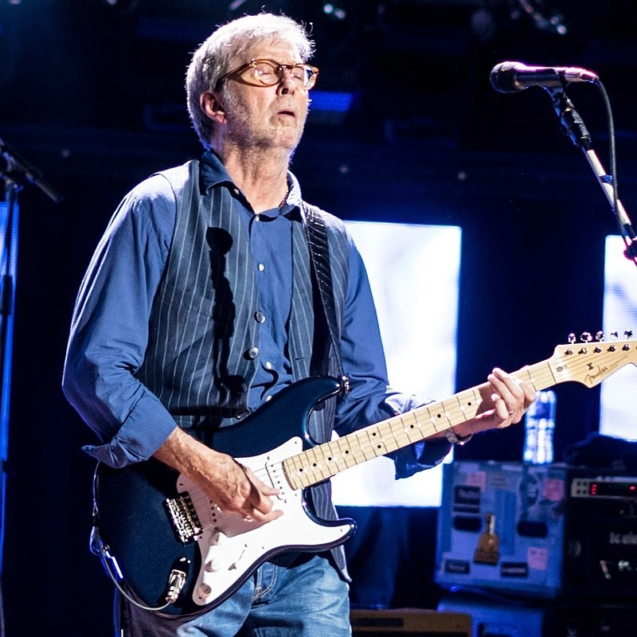
Eric Clapton
Blues, blues rock, hard rock, rock psicodélico
5 estrellas
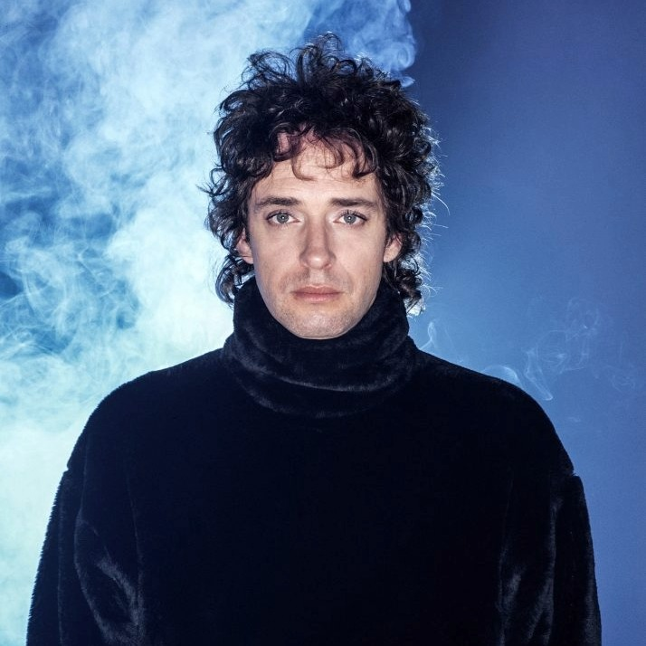
Gustavo Cerati
Rock, pop, electrónica, folclore, sinfónica, hip hop
4.4 estrellas
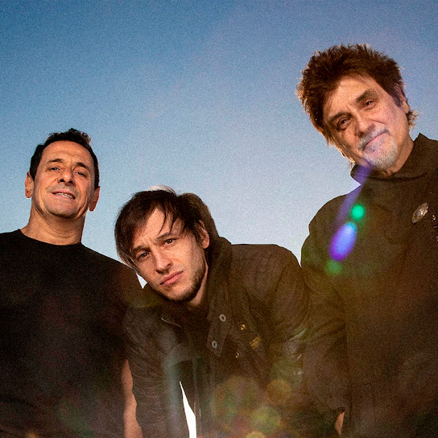
Divididos
Hard rock, funk rock, chacarera, zamba, country
4.5 estrellas
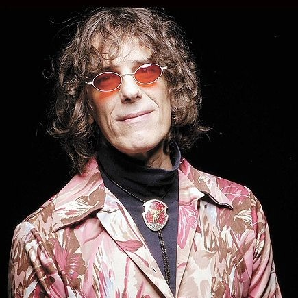
Luis Alberto Spinetta
Rock Nacional, Jazz rock, tango rock, folk rock, jazz fusión, rock psicodélico,
rock
experimental, funk rock, blues rock, rock progresivo, soft rock, rock sinfónico, art rock
4.7 estrellas
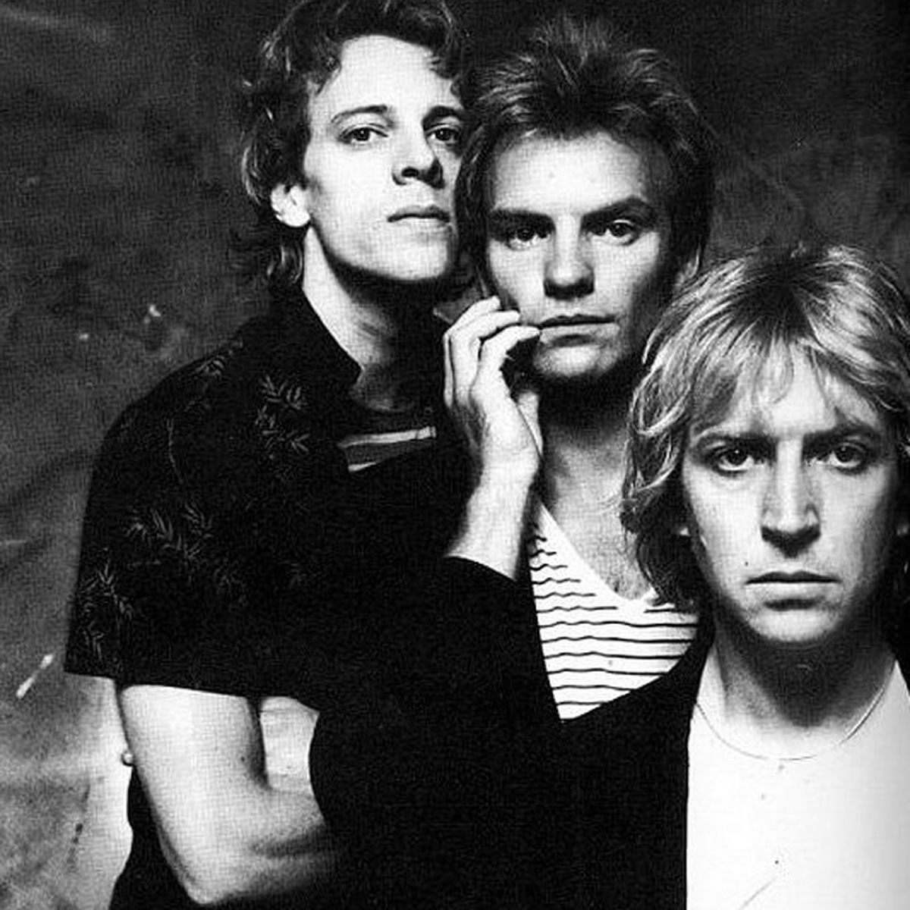
The Police
New wave, Pop rock, Reggae, rock, Punk Rock
4.7 estrellas
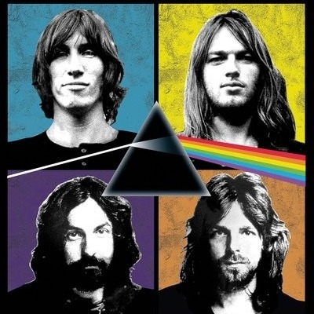
Pink Floyd
Art rock, Rock progresivo, Rock psicodélico, Rock experimental, Hard rock, Rock
espacial, Rock sinfónico
4.8 estrellas
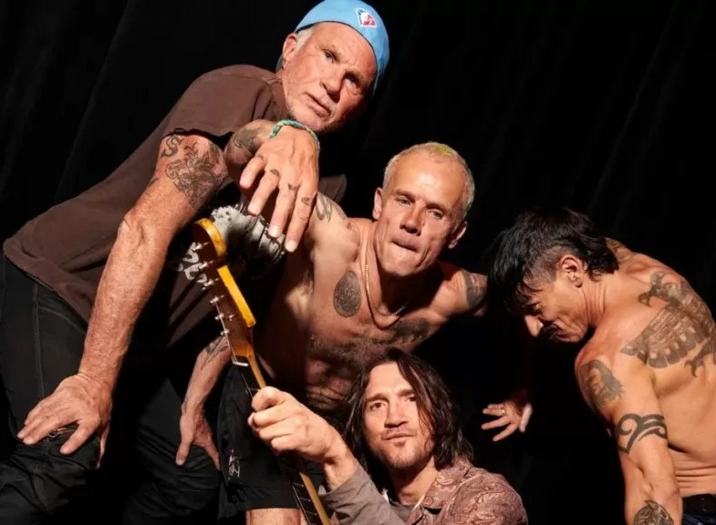
Red Hot Chilli Peppers
Rock alternativo, pop rock, funk rock, funk metal, punk funk, rap rock